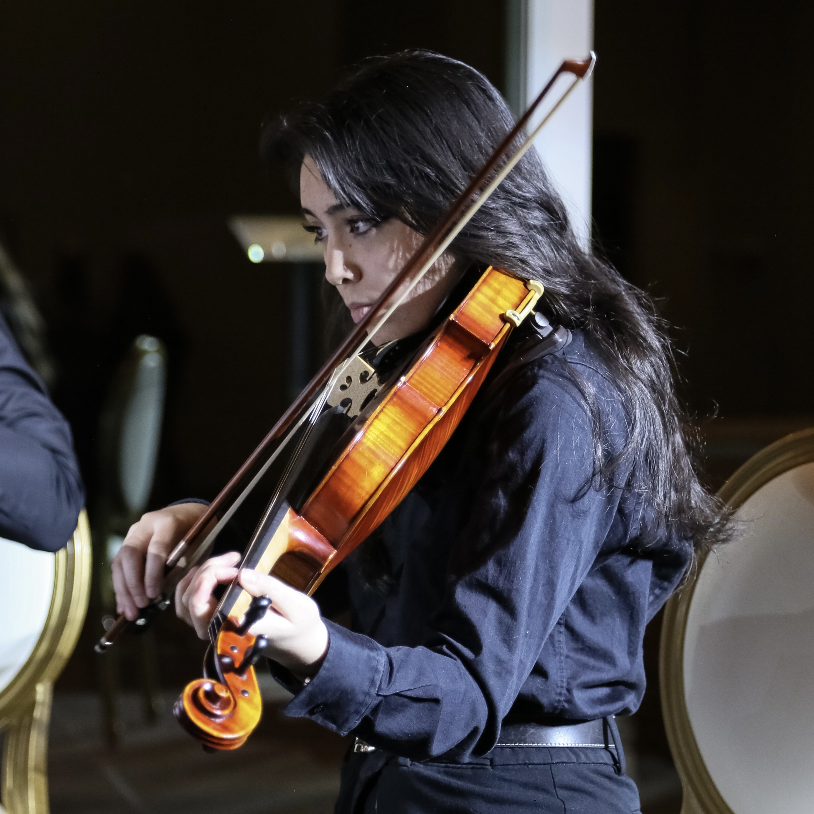

Jenny Moore
Classical Music
Aside from being a scientist and software developer, I'm also a musician.
I've played the viola for 12 years and am part of two string quartets (Vivo Quartet and Iron Strings) available for hire. We've played at several venues, from university dances to memorials, corporate events, and even stand-up comedy shows.
Chamber music (small groups, like quartets) has always been a big part of my life. I've even coached at Chamber Music Central, a summer camp for young musicians.
I'm also part of UofT's Skule Orchestra (part of the Engineering department) as the Corresponding Secretary, where I send email updates to players and communicate with potential clients for gigs.
Feel free to reach out to me if you would like to hire a string quartet or are ever in need of a violist.
Chamber Music History
Here's a Spotify playlist containing all the (classical) chamber music pieces I've ever performed:
Chamber Performances
More will be added soon! I have many more videos saved.
Shostakovich String Quartet No. 8,
I: Largo and II: Allegro Molto
Smetana String Quartet No. 1,
I: Allegro Vivo Appasionato